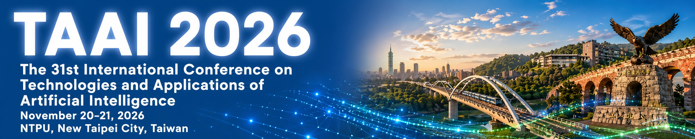

跳至主要內容
TAAI 2026
2026 年 11 月 20-21 日
國立臺北大學，臺灣臺北
選單
首頁
論文徵稿
重要日期
議程
報名
會場
委員會
關於
English

TAAI 2026
/
委員會
籌備與議程委員會
一個匯聚臺灣 AI 社群
及海內外
學者的委員會。
TAAI 2026 由一支國際團隊籌辦，成員來自頂尖大學、研究機構與產業實驗室的學者與實務工作者。
委員會
TAAI 2026
籌備委員會
名譽主席
Dalton Lin
國立臺北大學
名譽共同主席
Chih-Jen Lin
國立臺灣大學
Yue-Shan Chang
國立臺北大學
Yu-Shan Chen
國立臺北大學
Hsuan-Lien Chu
國立臺北大學
名譽顧問委員會
Li-Chen Fu
國立臺灣大學
大會主席
Tzong-Han Tsai
國立中央大學
Min-Yuh Day
國立臺北大學
Ling-Jyh Chen
中央研究院
大會指導委員會
Yi-Hsin Chen
國立清華大學
Chuan-Kang Ting
國立清華大學
Shou-De Lin
國立臺灣大學
Hsuan-Tien Lin
國立臺灣大學
Yu Tsao
中央研究院
國際軌道議程主席
Hen-Hsen Huang
中央研究院
Chi-Chun Lee
國立清華大學
Lieu-Hen Chen
國立暨南國際大學
Chuan-Ju Wang
中央研究院
Chung-Chi Chen
日本國立情報學研究所（NII）
國內軌道議程主席
Jen-Wei Huang
國立成功大學
Jun-Cheng Chen
中央研究院
Ying-Ren Chien
國立臺北大學
主題演講議程主席
Hsin-Min Wang
中央研究院
Yun-Nung Chen
國立臺灣大學
Chih-Hua Tai
國立臺北大學
AI 跨領域永續創新主席
Hao-Chiang Koong Lin
國立臺南大學
Chan-Yun Yang
國立臺北大學
Chi-Jui Huang
國立臺北大學
Sherry Chia-Ying Chan
國立臺北大學
Chia-Hui Chang
國立中央大學
Yuh-Shyan Chen
國立臺北大學
Chih-Chien Wang
國立臺北大學
產業軌道與贊助主席
Winston Hsu
國立臺灣大學
Ming-Shun Tsai
台灣人工智慧學校
Yan-Tsung Peng
國立政治大學
Nectar 議程主席
Min-Chun Hu
國立清華大學
Li Su
中央研究院
AI 教育與數位學習領導主席
Wan-Chi Chen
國立臺北大學
Yun-Hsuan Lien
中央研究院
Ming-Hsueh Tsai
國家教育研究院
特別議程主席
Sheng-Yu Peng
國立陽明交通大學
Tso-Jung Yen
中央研究院
AI 競賽主席
Yu-Te Wang
中央研究院
Shih-Hung Wu
朝陽科技大學
電腦對局競賽主席
Kuan-Yu Chen
國立臺灣大學
Shi-Jim Yen
國立東華大學
青年女性之星議程主席
Lun-Wei Ku
中央研究院
在地籌備主席
Yean-Fu Wen
國立臺北大學
Wei-Lun Chang
國立臺北大學
Chinyang Henry Tseng
國立臺北大學
Chi-Chia Sun
國立臺北大學
Chun-Yi Wei
國立臺北大學
報名註冊主席
Chia-Yu Lin
國立中央大學
Chia-Ru Chung
國立中央大學
財務主席
Ling-Yen Pan
國立臺北大學
網站主席
Huai-Sheng Huang
國立臺北大學
TAAI 顧問委員會
Shou-De Lin
國立臺灣大學
Hsuan-Tien Lin
國立臺灣大學
Tzong-Han Tsai
國立中央大學
Yi-Hsin Chen
國立清華大學
Yu Tsao
中央研究院
Wei-Ta Chu
國立成功大學
Hong-Yi Lee
國立臺灣大學
Cheng-Te Li
國立成功大學
Jian-Xing Li
國立臺南大學
Chih-Chieh Hung
國立中興大學
Min-Chun Hu
國立清華大學
Hung-Hsuan Chen
國立中央大學
Wen-Chih Peng
國立陽明交通大學
Jen-Wei Huang
國立成功大學
Ming-Shun Tsai
台灣人工智慧學校
Chuan-Kang Ting
國立清華大學
Yi-Cheng Wu
國立陽明交通大學
Hong-Yu Kao
國立成功大學
Chia-Hui Chang
國立中央大學
Hsin-Mu Tseng
國立陽明交通大學
Chia-Yu Lin
國立中央大學
Chia-Ru Chung
國立中央大學